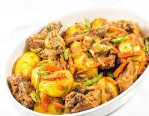

Hotpot

Descriptions of hotpot
Hot pot is a flavorful broth traditionally served inside a large metal pot.
The broth is brought to a boil and left simmering for the duration of the meal. Raw ingredients, such as meat and vegetables, are placed into the simmering broth and thus "cooked".
Ingrendients
- petatoes
- meat crewfish and fish
- pepper, galic, onions, greenpepper, greenspiece
- oil
- tomatoes
Steps in Preparing hotpot
- pill the potatoes and wash
- make all this listed ingredientsready, such boil the meat and fish and put aside
- pot oil on the fire and allow to get heated
- put the wash potatoes into the oil and leave it to fry for sometime
NOTE: frying the potatoes make it alot easy as it dries the water in the potatoes and prevent it from breaking into smaller pieces
- then add the tomatoes and other ingredients to the pot
- stell to make sure all ingredients are enough
- Add meat, close the pot and allow to boil for time
- chect if its ready then serve